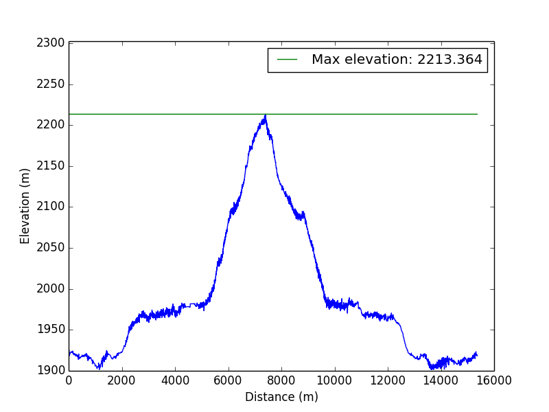

Rifugio Fuciade e dintorni
Escursione - 2015-01-03
Mappa
Profilo altimetrico:
Informazioni
| Distanza | Quota Minima | Quota Massima |
|---|---|---|
| 15262.68 | 1901.402 | 2213.364 | Dislivello (qmax - qmin) | Dislivello Positivo | Dislivello negativo |
| 312.0 | 1073 | 1087 | Tempo Totale | Tempo effettivo | Tempo sosta |
| 4:41:28 | 3:29:41 | 1:11:47 |